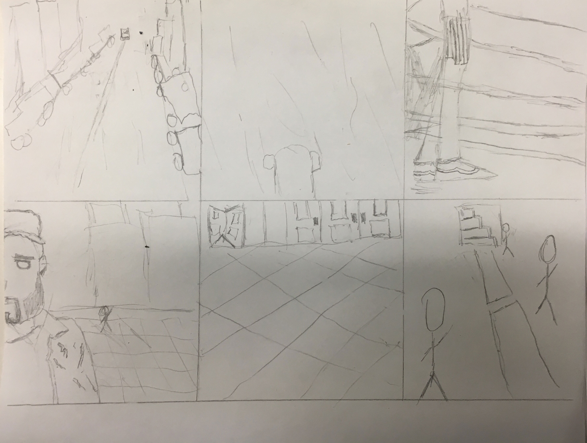
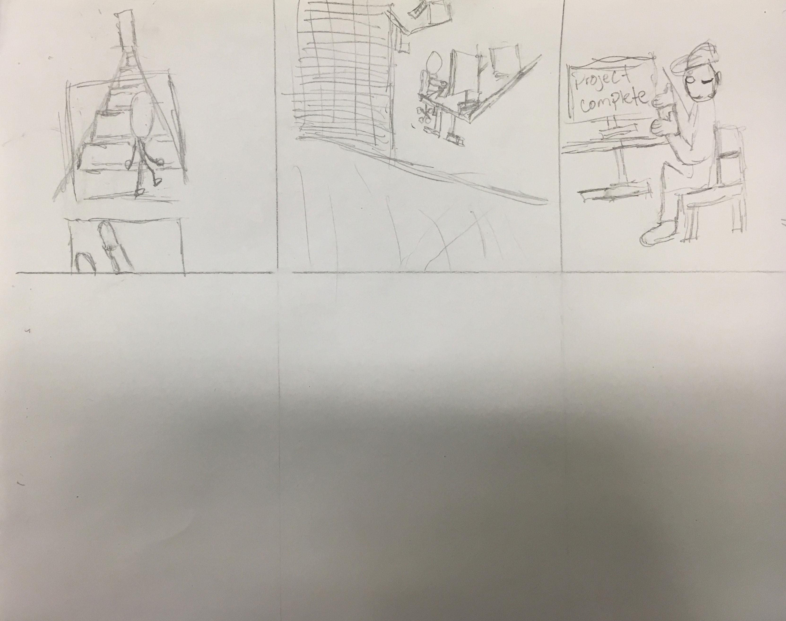

A storyboard is a sequence of drawings, typically with some directions and dialogue, representing the shots planned for a movie or television production. Here is a story board I made which is usally made before a video, but I decided to make a couple of videos and put them togther, to then draw my storyboard based off the story the videos I put together made. In other words Storyboards are made in the preproduction process but I chose to do it post production.


Video Board
This is the video board to the storyboard above I made using Adobe Priemere. Combining a few vidoes I made with my iphone 6s,an audio recording from a pair of earmuff headphones, and special effects sound audio. The process to combine my storyboard took me no longer than 5 hrs. I chose to make this project to emphasize the feeling you have when you believe you could finish your task last minute and feel the adreneline rush of attempting to get it done. Inspired by the 5 hrs I had to make the the whole project.